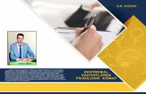

EVEkstremal va favqulodda vaziyatlarda psixologik xizmat ko'rsatish usullariga bag'ishlangan darslik.
Ushbu darslik oliy o'quv yurtlarining pedagogika va psixologiya ta'lim yo'nalishi talabalari uchun mo'ljallangan bo'lib, ekstremal vaziyatlar va favqulodda holatlarda psixologik xizmat ko'rsatishning nazariy hamda amaliy asoslarini yoritadi. Kitobda ekstremal vaziyatlar psixologiyasining zamonaviy tadqiqot metodlari, shaxs motivatsiyasi, stressga chidamlilik va kasbiy moslashuv masalalari atroflicha muhokama qilingan.